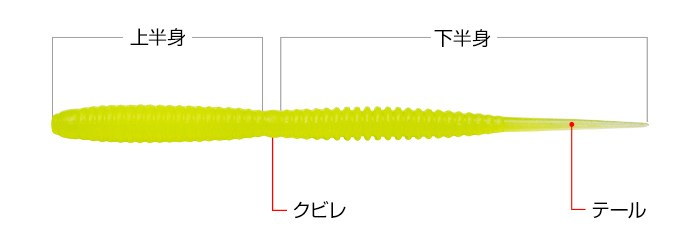
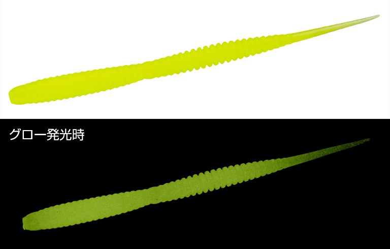
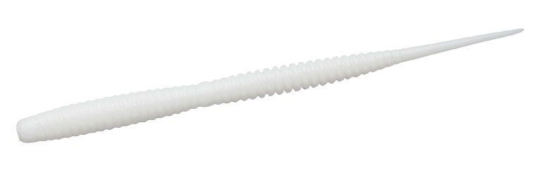
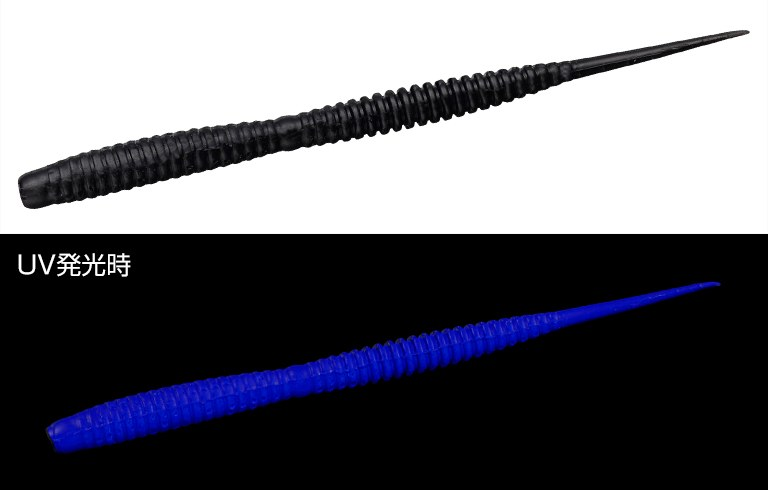
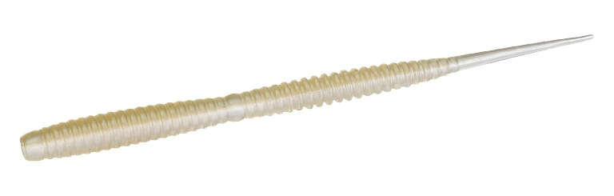
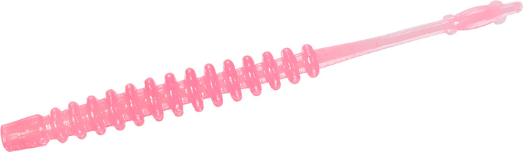
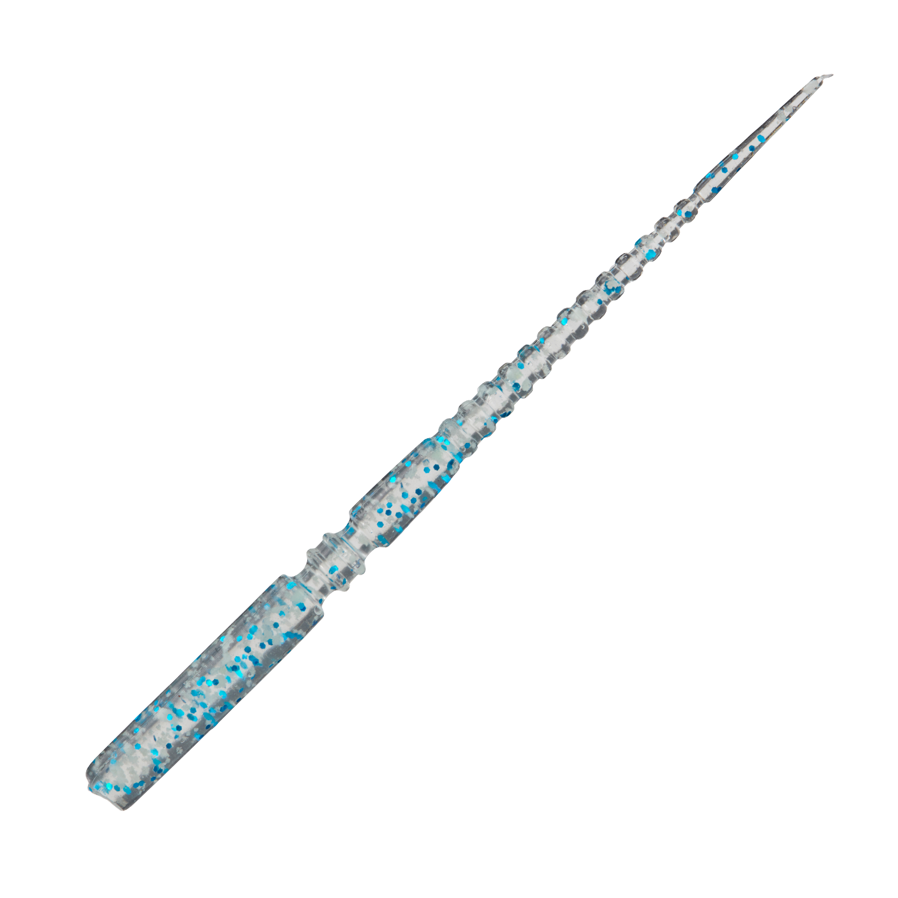

バルキーギムレット
バルキーギムレットは、エバーグリーンのアジング用ワーム「ギムレット」をベースに、ボディを太く長くチューンした2.9インチのワームです。キャッチコピーは「デカアジキラー」。
キリ（錐）型テールの微波動はそのままに、水押しとロッドアクション時の存在感を強くして、大場所や深場の良型アジにアピールできるのが最大の特徴です。

画像出典:エバーグリーン公式HP
スペック
- メーカー
- EVERGREEN（エバーグリーン）
- タイプ
- アジング用ワーム（ストレート）
- 全長
- 2.9インチ
- 入り数
- 8本
- カラー
- 全13色
- ターゲット
- アジ
- 価格
- 650円（税別）
▼今すぐチェック

バルキーギムレットの特徴
ギムレットを太く長くチューンした「デカアジキラー」
-
キリ型テールの微波動と、強い水押し
ギムレット譲りのキリ型テールの微波動はそのままに、太いボディで水押しを強化。ロッドアクションを入れた時の存在感も大きい。
-
小さな力で折れて吸い込まれやすい
柔らかい素材とくびれで、小さな力でも折れ曲がる。弱いバイトでも吸い込まれやすい。
-
ジグヘッドに合わせた太さとリブ
上半身は#4（M）・#2（L）サイズのジグフックに合う太さと長さで、浅いリブ。下半身はオリジナルより太いテーパーで、深いリブ構造になっている。
バルキーギムレットの使い方
ジグヘッドに付けて、キャストしたらカウントで沈め、軽いリフト＆フォールで誘うのが基本です。フォール中にアタリが出ることが多いので、ラインの変化に集中しましょう。
太めのボディで水押しが強いので、ただ巻きでもアピールできます。素材はスーパーソフトに調整された「ノンソルト」で、イカ・シュリンプ・フィッシュ＋アミノ酸のスペシャルフォーミュラ入りです。

画像出典:エバーグリーン公式HP
バルキーギムレットの得意な状況
大場所や深場で良型のアジを狙う時や、ボートアジングで出番です。
小さいワームでは見つけてもらえない広い場所でも、太いボディの水押しで存在に気づかせやすいのが強み。デカアジがよく釣れる場面で頼りになります。
ワンポイント
深場では、ジグヘッドを少し重めにして、ボトム付近から2〜3回しゃくっては落とすを繰り返すと、太いボディの存在感を生かして広い範囲からアジを寄せられます。
ギムレットとバルキーギムレットの使い分け
| モデル | サイズ | こんな |
|---|---|---|
| ギムレット | 1.5／ |
豆アジ〜中 |
| バルキーギムレット | 2.9インチ |
大場所・ |
スペックはエバーグリーン公式HPの記載より。
人気カラー
バルキーギムレットの人気カラーを紹介します。

グローチャート夜や濁りの時に目立つグローのチャート。

伝説の白シルエットがはっきり出る白。常夜灯まわりの定番。

伝説の黒暗い場所でシルエットを出したい時の黒。

オキアミナチュラルアミやオキアミを食べている時に。
画像出典:エバーグリーン公式HP
▼今すぐチェック
バルキーギムレットに似ているルアー
-

げっかびじん アジングビーム2.0 ダイワ 詳細はこちら＞アジング用ワームの定番。小さめで比べたい時に。
-
 ガルプ！SW フローティングライトクローラー
バークレイ
詳細はこちら＞
ガルプ！SW フローティングライトクローラー
バークレイ
詳細はこちら＞
匂いと味で食わせるガルプのワーム。
-

あじどうワーム ゼロレジスト メジャークラフト 詳細はこちら＞水の抵抗を受けにくいアジングワーム。